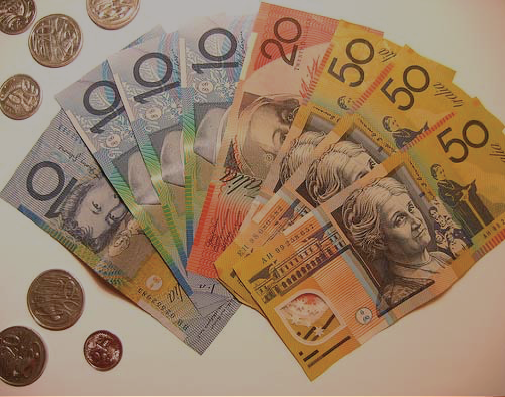

CASH IS FOR CRIMINALS: WHY WE SHOULD SCRAP BIG NOTES
By Nathan Coates
October 21, 2016 4:50 PM
DO YOU WANT TO PIN THIS ARTICLE?
Pinning this article will save it to your social board page and allow you to see all the articles your friends have pinned. Your articles will be outlined in red and your friends in blue.
A massive stash of cash may sound like a good thing, but according to one US economist, the vast numbers of banknotes in circulation around the world are making us poorer and less safe.
Even as people in advanced economies are using less paper money, there is more hard currency in circulation.
To put a number on part of the pile, there is a record $US1.4 trillion in greenbacks alone, or $US4,200 for each American, mostly in hundred-dollar bills.
Ken Rogoff, an economics professor at Harvard, has been writing about paper money for 20 years and he says much of this cash "is used to facilitate all sorts of crime".
Beyond the more heinous crimes of human and drug trafficking and terrorism, some earners hoard their money to avoid tax.
While using paper money has some advantages, Professor Rogoff says the quantity of big bills lying around is "out of kilter".
He's advocating for a world where, within 15 years, the highest banknote available would be a ten dollar bill.
Illegal immigration, dodging tax made easier
"Off the books" payments are commonly paid to undocumented workers in the United States, and for Professor Rogoff that makes phasing out cash a key pillar in efforts to stop illegal immigration.
Although migrant workers could be remunerated in pre-paid cards or Bitcoins, he says these marginal forms of currency could not work on the same scale as cash.
Meanwhile, estimates of uncollected tax in the US amount to about 15 per cent of total taxes.
The vast majority of cheats are understood to be cash-intensive businesses.
This revenue problem is exacerbated in some European countries where sales tax is more important than income tax.
According to Professor Rogoff, these nations are "really attuned to the idea of trying to phase down cash".
The value of unpaid taxes worldwide is easily $2 trillion to $3 trillion, he said.
"You are not going to get it all back by making it harder to use cash, but [avoiding tax and workplace law] is made very easy with cash," he said.
Big bills work for cocaine traders
Statistically speaking, most illegal drug trafficking transactions are in cash.
But drug dealers don't tend to use the smaller denominations, preferring hundred-dollar bills.
"If you have $1 million in hundreds, it weighs 10 kilograms and you can fit it in a briefcase," says Professor Rogoff
That same amount in $10 bills would weigh 100 kilograms, making it much harder to move around, hoard, hide and count.
Lower value bills means more options in a crisis
One way for central banks to stimulate investment during a prolonged financial crisis is to apply negative interest rates.
However, in an economy awash with large denomination bills, sharply cutting rates could create "complete chaos", says Professor Rogoff.
Investments suddenly gone bad would spur a rush to convert capital into hard currency, decreasing the effectiveness of the interest rate drop (even leaving aside the problem of large amounts of money disappearing from the economy).
A mostly cashless society, argues Professor Rogoff, would allow central banks to dramatically cut interest rates in times of severe crisis without this chaos.
He adds that the plan would exclude small savers, instead targeting institutional investors such as pension funds and big banks — the kind of players that would need humidity-controlled, insured vaults to sustainably house billions of dollars.
"This is not something to do all the time: negative interest rate policy is hopefully something we don't need," he says.
"But with the very low level of interest rates right now [in the US], the very low level of inflation ... if there is another deep recession, central banks are going to be wishing they could do it."